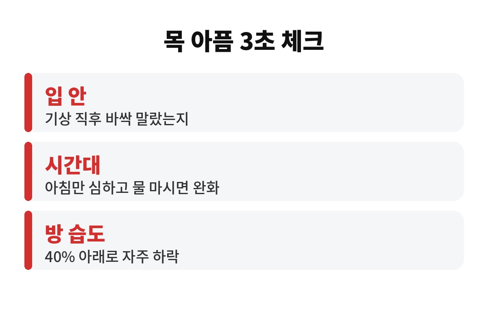
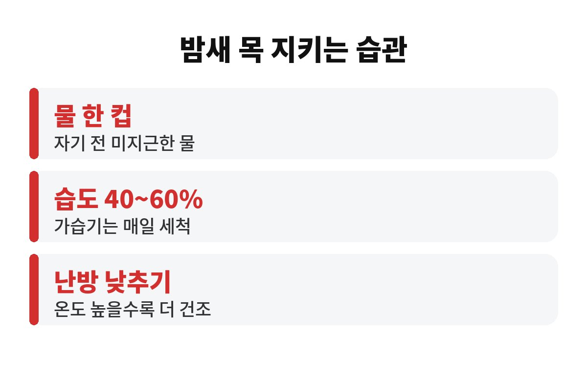

자고 일어나면 목 아픔이 반복된다면, 먼저 3초 체크부터 해보세요. 일어나자마자 침을 한 번 삼켜보고 입 안이 바싹 말랐는지만 봐도 방이 건조했는지 대략 감이 오거든요. 아침마다 목이 칼칼한 분들, 감기도 아닌데 왜 이런지 궁금하셨죠?
날씨가 쌀쌀해지고 난방을 켜기 시작하면 이런 이야기를 부쩍 많이 들어요. 오늘은 자고 일어나면 목 아픔이 생기는 흔한 이유와, 오늘 밤부터 바로 해볼 수 있는 습관을 편하게 풀어볼게요.
낮에는 말도 하고 물도 마시니까 목이 계속 촉촉하게 유지돼요. 그런데 잠자는 동안에는 몇 시간 동안 물을 한 모금도 안 마시죠. 침 분비도 줄어들고, 코가 막혀서 입으로 숨을 쉬면 목 점막이 그대로 마른 공기에 노출돼요.
점막이 마르면 따끔하고 칼칼한 느낌이 들어요. 그래서 자고 일어나면 목 아픔이 심하다가도, 물 한 잔 마시고 한두 시간 지나면 슬그머니 괜찮아지는 경우가 많아요. 이런 패턴이라면 감기보다 건조함이 원인일 가능성이 커요.
실내 습도는 보통 40~60% 사이가 쾌적하다고 알려져 있어요. 겨울철에 난방을 틀면 이 수치가 40% 아래로 뚝 떨어지기 쉬워요. 습도계는 몇천 원이면 살 수 있으니, 침실에 하나 두고 자기 전에 한번 확인해 보세요.
| 확인 항목 | 이런 신호면 건조 의심 |
| 기상 직후 입 안 | 끈적하고 바싹 마른 느낌 |
| 목 아픔 시간대 | 아침에만 심하고 물 마시면 완화 |
| 방 습도 | 40% 아래로 자주 내려감 |

습도가 낮다고 가습기를 밤새 세게 틀어놓는 분들이 많아요. 그런데 너무 습해지면 곰팡이와 집먼지진드기가 늘어서 오히려 목과 코가 더 불편해질 수 있어요. 가습기 물통을 매일 비우고 닦아주지 않으면 세균이 번식할 수 있다는 점도 꼭 기억해 주세요.
가습기가 없다면 젖은 수건을 널어두거나 침대 옆에 물 한 컵을 두는 것도 도움이 돼요. 효과는 가습기보다 약하지만, 아무것도 안 하는 것보다는 훨씬 낫죠. 결국 중요한 건 "적당한 습도를 꾸준히 유지하는 것"이에요.
첫째, 자기 전에 미지근한 물을 한 컵 마셔 두세요. 너무 많이 마시면 화장실 때문에 깨니까 적당히요. 둘째, 침실 온도를 너무 높게 올리지 마세요. 따뜻한 것도 좋지만 온도가 높을수록 공기는 더 건조해져요.
셋째, 코가 막혀서 입으로 숨 쉬는 습관이 있다면 코 막힘부터 풀어주는 게 좋아요. 넷째, 담배나 술은 목 점막을 더 마르게 하니 자기 전에는 피하는 게 좋고요. 이 정도만 해도 자고 일어나면 목 아픔이 눈에 띄게 줄었다는 분들이 많아요.
한 가지 더, 자고 일어나면 목 아픔이 있는 분들 중에는 베개 높이가 맞지 않아 입이 벌어진 채로 자는 경우도 있어요. 입을 벌리고 자면 숨이 계속 목 점막을 스치면서 마르니까 아침에 더 칼칼해지죠. 베개 높이를 조금 조정하거나 옆으로 누워 자는 것만으로 달라지는 분도 있답니다.
또 환기도 은근히 중요해요. 난방을 켜 두고 창문을 꽁꽁 닫아두면 먼지와 건조한 공기가 그대로 갇혀요. 하루 두세 번, 몇 분만이라도 창문을 열어 공기를 바꿔 주면 목이 훨씬 편해질 수 있어요. 아침에 눈 뜨자마자 물 한 컵을 천천히 마시는 습관까지 더하면 금상첨화예요.

물을 마셔도 목 아픔이 하루 종일 가거나, 열이 나거나, 삼키기 힘들 정도라면 단순 건조함이 아닐 수 있어요. 목이 계속 쉬거나 이물감이 오래가는 경우, 속쓰림이 같이 있어서 신물이 올라오는 경우도 원인이 다를 수 있어요. 이럴 때는 참지 말고 이비인후과에서 확인받아 보세요.
여러분은 아침에 목이 어떠세요? 오늘 밤 습도계부터 확인해 보시고, 결과를 댓글로 알려주세요. 도움이 되셨다면 구독해 두시고 다음 건강 이야기도 만나요.
※ 이 글은 일반적인 건강 정보이며, 증상이 반복되거나 심하면 반드시 전문의 상담을 받으세요.